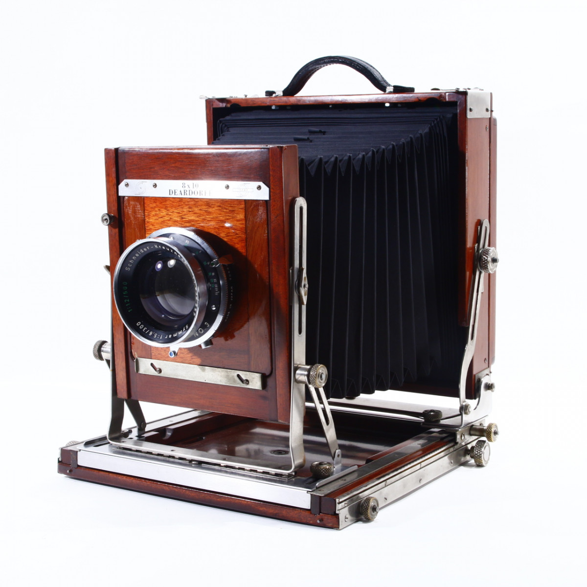
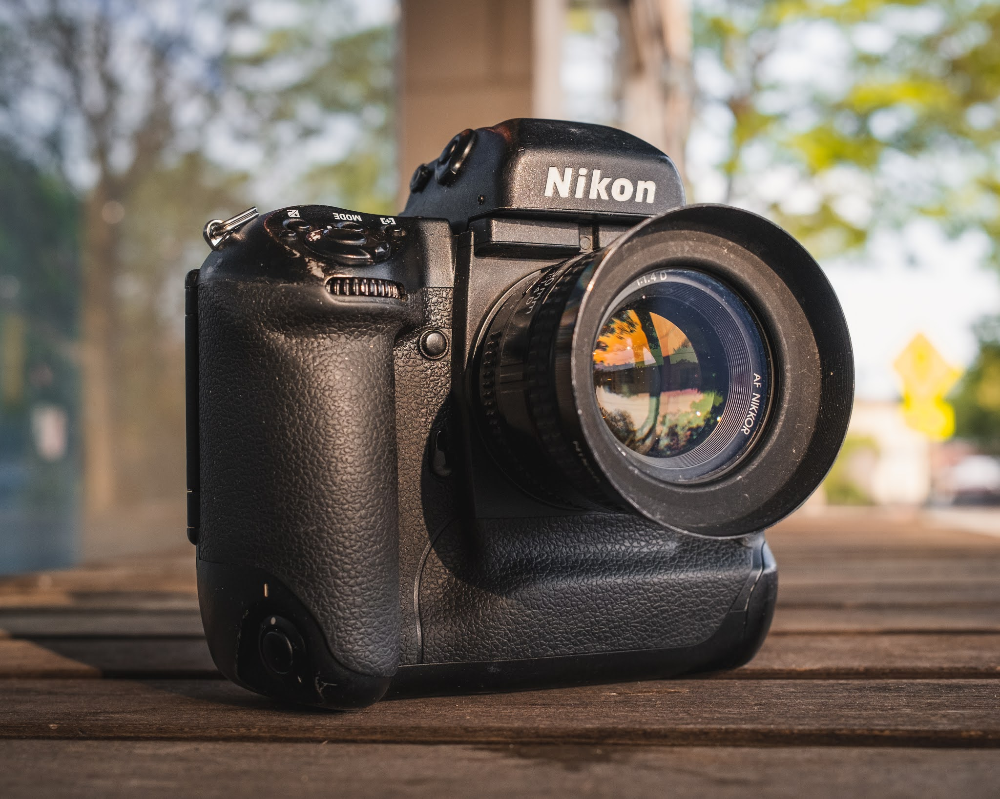

Hopefully Clickable Links

8x10 Photos
4x5 Photos
Medium Format Photos

35mm Photos
This place will serve as a landing page for The Odin Project, as well as a test portfolio for my photography

8x10 Photos
4x5 Photos
Medium Format Photos
35mm Photos
I have seen a great number of poorly Photoshopped images in my time as a photographer and I can tell by the pixels that it is a fake. Yeah see that there? You can tell because of the way it is.
- Ansel AdamsSign up for our product by clicking that button right over there!